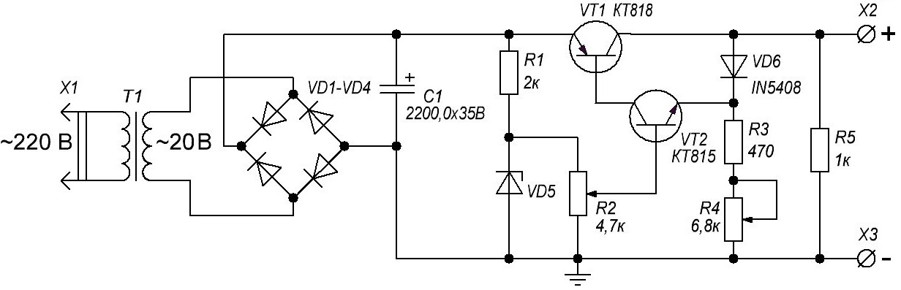

Простой лабораторный блок питания
(1-15 В, 1,5 А)
Блок питания может обеспечивать на выходе стабилизированное напряжение от 0 до 15 В и ток до 1,5 А и построен всего на двух транзисторах. В схеме использованы наиболее доступные компоненты.

Рис. 1 - Схема простого лабораторного блока питания
Таблица 1
| Обозначение | Наименование | Номинал | Примечание |
|---|---|---|---|
| С1 | Конденсатор электролитический | 2200 мкФ × 35 В | |
| R1 | Резистор постоянный | 2 кОм/ 0,5 Вт | |
| R2 | Резистор переменный | 4,7 кОм | |
| R3 | Резистор постоянный | 470 Ом/0,5 Вт | |
| R4 | Резистор переменный | 6,8 кОм | |
| R5 | Резистор постоянный | 1 кОм/2 Вт | |
| Т1 | Трансформатор | 220 В/20 В | С напряжением вторичной обмотки 20 В и током 1,5 А |
| VD1-VD4 | Диод | КД226 | Диодный мост на максимальный выпрямленный ток не менее 2 А |
| VD2 | Стабилитрон | КС515Г | Напряжение стабилизации 15 В |
| VT1 | Транзистор биполярный | КТ818 | С любым буквенным индексом |
| VT2 | Транзистор биполярный | КТ815 | С любым буквенным индексом |
Схема состоит из трех основных частей:
- Сетевой понижающий трансформатор Т1 обеспечивает нужное напряжения, а также служит для гальванической развязки с сетью. Основные параметры блока питания будут зависеть в первую очередь от трансформатора. При выборе трансформатора нужно учитывать следующий момент - максимальное выходное напряжение блока питания будет на несколько вольт меньше, чем напряжение на выпрямителе. Трансформатор подбирается с током около 1,5 А.
- Выпрямитель на диодах VD1-VD4 для выпрямления переменного напряжения в постоянный и конденсатор C1 для сглаживания напряжения после выпрямителя и фильтрации помех.
- Стабилизатор для стабилизации выходного напряжения.
Сетевое напряжение поступает на первичную обмотку трансформатора, на вторичной обмотке получаем пониженное напряжение, максимальный ток будет зависеть от габаритных размеров трансформатора и от диаметра провода вторичной обмотки.
Далее переменное напряжение со вторичной обмотки трансформатора поступает на двухполупериодный выпрямитель, построенный на 4-х одинаковых диодах - диодный мост. После выпрямителя установлен электролитический конденсатор для сглаживания напряжения до постоянного.
Постоянное напряжение поступает на схему стабилизатора, где стабилизируется до некоторого уровня. Напряжение стабилизации будет зависить от стабилитрона, который задает максимальное напряжение на выходе.
Ток такого простого стабилизатора небольшой, по нему протекает около 15-20 мА, поэтому его нужно усилить с помощью простого каскада усиления по току построенный на транзисторе VT1 и VT2. Транзисторы подключены таким образом для того, чтобы обеспечить максимально большое усиление, т.е. по сути это аналог составного транзистора.
Регулятор напряжения (переменный резистор R1) выполняет функцию простого делителя напряжения и может быть рассмотрен как два последовательно соединенных резистора с отводом от места их соединения, изменяя сопротивление каждого, мы можем регулировать напряжение, это напряжение усиливается ранее указанным каскадом. Переменный резистор R4 позволит ограничивать выходной ток.
В качестве диодного моста можно использовать готовые мосты, которые можно найти в компьютерных блоках питания или же собрать мост из четырех аналогичных диодов с током от 2 А.
Для увеличения выходного напряжения блока питания нужно найти соответствующий трансформатор, а также заменить стабилитрон на более высоковольтный, Резистор ограничивает ток через стабилитрон, расчет производится исходя из напряжения с выпрямителя, резистор рассчитывают так, чтобы ток через стабилитрон не превышало значение в 25-30 мА в случае стабилитронов 0,5 Вт и 40-45 мА в случае если использован стабилитрон на 1 Вт. Если нет нужного стабилитрона, то можно последовательно соединить два или несколько, для получения нужного напряжения стабилизации. Схема стабилизатора работает в линейном режиме, поэтому силовой транзистор VT2 необходимо установить на радиаторе.
Блок питания может переносить короткого замыкания с продолжительностью не более 5 секунд, в этом режиме ток ограничивается в районе 1,7 А.
Источники
vip-cxema.org - Простейший лабораторный блок питания для начинающего